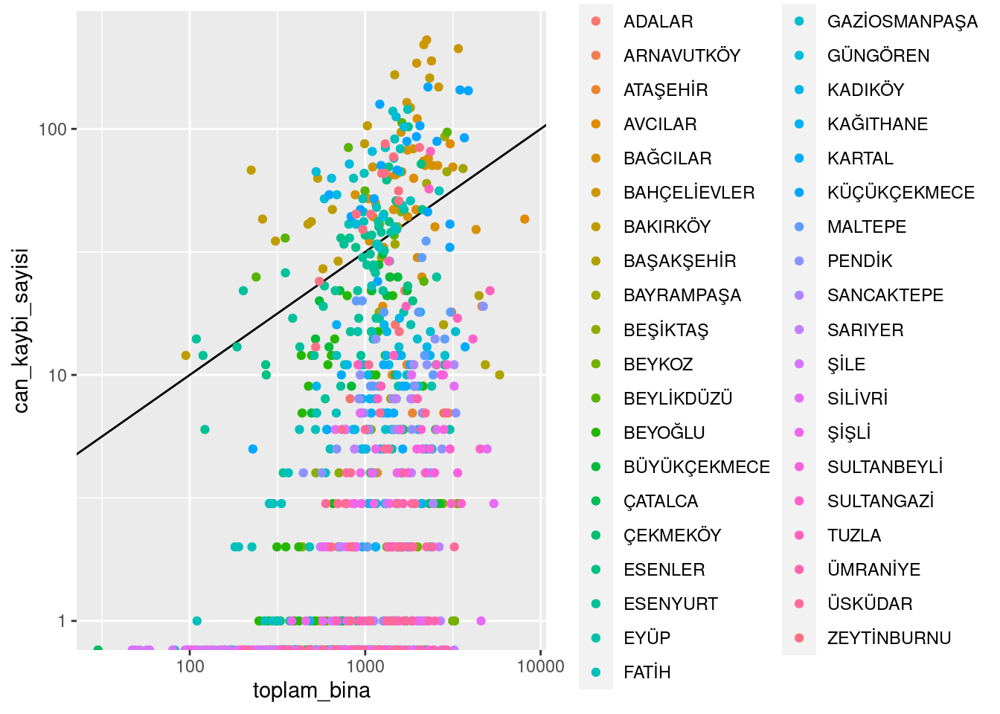

In this dataset some column names has been changed. Structure and first 10 observation can be seen below. Download R.Data file to see the entire dataframe.
# A tibble: 30 × 2
Belediyeler `2019 yılı nüfusları`
<chr> <dbl>
1 Adalar Belediyesi 15238
2 Arnavutköy Belediyesi 282488
3 Ataşehir Belediyesi 425094
4 Avcılar Belediyesi 448882
5 Bağcılar Belediyesi 745125
6 Bahçelievler Belediyesi 611059
7 Bakırköy Belediyesi 229239
8 Başakşehir Belediyesi 460259
9 Bayrampaşa Belediyesi 274735
10 Beşiktaş Belediyesi 182649
# ℹ 20 more rows
Show the code
save(nufus, file ="nufus.RData")
You can also download this dataset as R.Data file.
An Overview
Show the code
library(ggplot2)vis <- deprem_analiz %>%inner_join(mahalle_bazli_bina, by ="id") %>%select(ilce_adi.x, ara_1_4_kat, ara_5_9_kat, ara_9_19_kat, toplam_bina, can_kaybi_sayisi) vis %>%ggplot(aes(x = toplam_bina, y = can_kaybi_sayisi, color = ilce_adi.x )) +geom_abline(slope =log10(10)/log10(100),intercept =0) +scale_x_log10()+scale_y_log10()+geom_point()
Warning: Transformation introduced infinite values in continuous y-axis

The plot shown above shows us total loss vs total number of buildings.
Show the code
vis2 <- deprem_analiz %>%inner_join(mahalle_bazli_bina, by ="id") %>%select(ilce_adi.x,once_1980, ara_1980_2000, sonra_2000, toplam_bina, can_kaybi_sayisi,toplam_bina) %>%group_by(ilce_adi.x) %>%summarize(toplam_once_1980 =sum(once_1980), toplam_ara_1980_2000 =sum(ara_1980_2000), toplam_sonra_2000 =sum(sonra_2000))ggplot(vis2, aes(x = ilce_adi.x)) +geom_bar(aes(y = toplam_once_1980), stat ="identity", fill ="blue", position ="dodge") +geom_bar(aes(y = toplam_ara_1980_2000), stat ="identity", fill ="green", position ="dodge") +geom_bar(aes(y = toplam_sonra_2000), stat ="identity", fill ="red", position ="dodge") +labs(title ="Toplam Değerler - İlçelere Göre", x ="İlçe Adı", y ="Toplam Değer") +scale_fill_manual(values =c("Once 1980"="blue", "Ara 1980-2000"="green", "Sonra 2000"="red"),name ="Zaman Aralığı",labels =c("Once 1980", "Ara 1980-2000", "Sonra 2000")) +theme_minimal() +theme(axis.text.x=element_text(angle=90,hjust=1,vjust=0.5))+guides(fill =guide_legend(title ="Zaman Aralığı"))
This plot shows us total building for each time zone vs district.
Note: blue –> before 1980, green –> between 1980 - 2000, red –> after 2000.